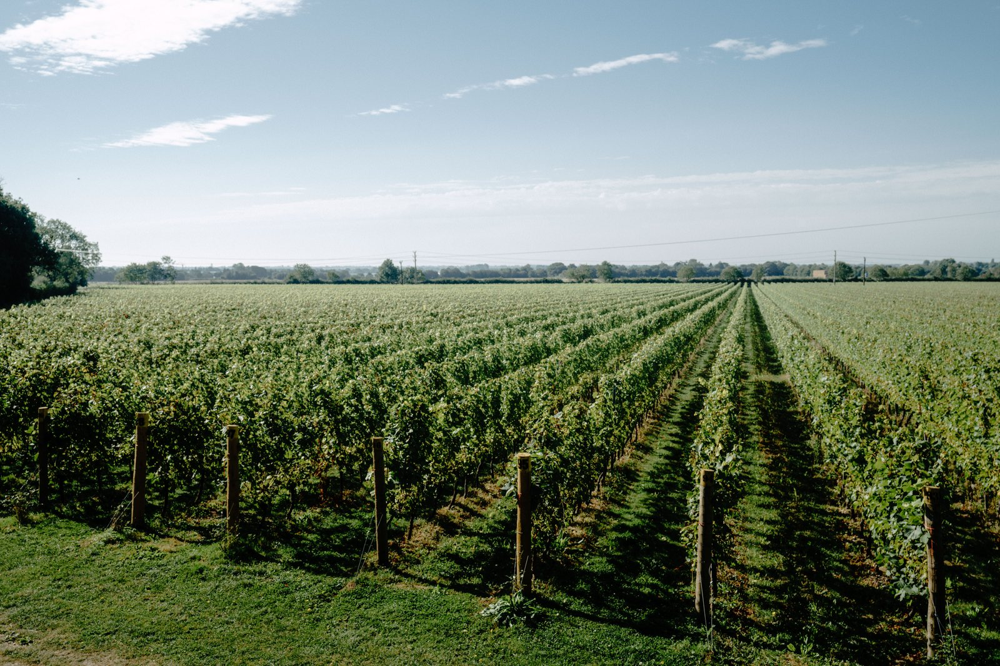

Chichester & Petworth
Tinwood Estate
A boutique sparkling specialist on the Chichester plain — £21 tours, eight lodges in the vines, and a whole estate that’s completely dog-friendly. Winter Sunday roasts are the local secret.

The visit
Tinwood is one of the easiest vineyard visits in West Sussex: ten minutes in a taxi from Chichester station, free parking if you drive, and an estate where your dog is welcome absolutely everywhere.
Tours are £21 per person
Guided tours and tastings run at £21 a head. They’re the estate’s most-booked experience, so it’s worth booking ahead in summer.
The winter Sunday roasts
Tours and tastings sell the most tickets, but the estate’s most loved event is the roast dinners they host on Sundays throughout the winter. It’s the reason to come back once the vines are bare.
The whole estate is dog-friendly
Not just the terrace — the estate confirmed the entire site is completely dog-friendly, including the Tasting Room, the Vineyard Kitchen and the lodges.
Nearest station is Chichester, and taxis run from outside — about a 10-minute drive. If you drive, there’s free parking on site.
Eight lodges, each sleeping two, with breakfast delivered to the door. Book a tour alongside a stay and you get 20% off the tour.
From the estate · 20 August 2026
2026 looks like the earliest harvest on record. After a fifth heatwave of the year, Tinwood saw veraison begin at the end of July — the stage where grapes change colour and the vines switch from growth to ripening. It usually happens around mid-August. The estate expects harvest could begin as early as 6 September, and is anticipating exceptional fruit quality.
Common questions
Is Tinwood Estate dog-friendly?
Yes — completely. The estate confirmed the whole site is dog-friendly, including the Tasting Room, the Vineyard Kitchen and the lodges.
How much is a tour at Tinwood Estate?
Tours are £21 per person. If you book a tour alongside a lodge stay you get 20% off the tour.
What’s the nearest station to Tinwood Estate, and is there parking?
Chichester is the nearest station, about a 10-minute taxi from there. There is free parking on site.
Can you stay at Tinwood Estate?
Yes — eight lodges, each sleeping two, with breakfast delivered to your door.
Is Tinwood open in winter?
Yes. The estate hosts roast dinners on Sundays throughout the winter, which they describe as their most loved event.
What should a first-time visitor not miss?
The tours and tastings are the most booked experience, but the winter Sunday roasts are the estate’s own favourite.
At a glance
- Where
- Tinwood Lane, Chichester, West Sussex · PO18 0NE
- Tours
- £21 per person
- Food on site
- The Vineyard Kitchen · British tapas
- Stay on site
- 8 lodges · sleep 2 · breakfast delivered
- Lodge perk
- 20% off the tour with a stay
- Dogs
- Whole estate — completely dog-friendly
- In winter
- Sunday roast dinners
- Parking
- Free on site
- Nearest station
- Chichester (10 min taxi)
Also on the Chichester & Petworth
- Ashling Park Estate Chichester
- Roebuck Estates Petworth
- Upperton Vineyards Petworth
- Blackdown Ridge Estate Haslemere (Sussex Weald)